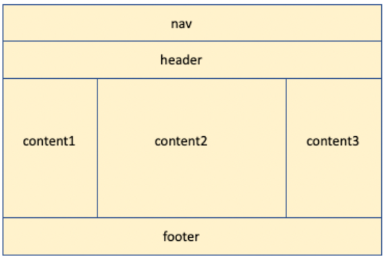

A.
De värden som man lägger till efter Grid-template-columns avgör hur många kolumner (columns) som vårt rutnät (grid) ska bestå av. Grid-template-rows behandlar antalet rader (rows) som vårt rutnät (grid) ska bestå av. Låt oss säga att vi lägger till två värden efter grid-template-columns, då kommer rutnätet bestå av två kolumner. Om grid-template-rows sedan tilldelas fyra värden så kommer rutnätet bestå av fyra rader. Grid-template-areas definierar sedan namnen/vilka elementen som ska ingå i rutnätet och vart i rutnätet de ska placeras.
B.
En media query är ett CSS verktyg som tillåter oss att ändra en webbsidas stil och layout utefter storleken hos enheten som webbsidan visas på. Media queries gör det med andra ord möjligt att skapa webbsidor med responsiv/adaptiv design och layout utefter användarens enhetsstorlek. En webbsidas design kan med andra ord se helt olika ut beroende på om du besöker den på en laptop, läsplatta eller mobiltelefon.
